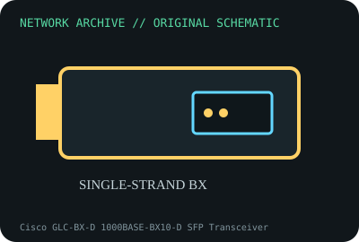

[ MODEL-SPECIFIC NETWORK HARDWARE ]
Cisco GLC-BX-D 1000BASE-BX10-D SFP Transceiver
1490nm Gigabit bidirectional SFP for a single strand of single-mode fiber. Confirm exact product label and revision before applying specifications.

IDENTIFICATION: Confirm manufacturer PID, hardware revision, device ID or module suffix. Nominal standards/link rates are not measurements of payload performance.
Exact specifications and compatibility
| Dedicated subcategory | SFP transceivers: optical and copper |
|---|---|
| Exact product/model | Cisco GLC-BX-D 1000BASE-BX10-D SFP Transceiver |
| Bus, ports and physical interface | Hot-pluggable SFP with simplex LC optical interface; WDM optic pairs with complementary BX-U endpoint. |
| PHY, radio or protocol | 1000BASE-BX10-D; transmits 1490nm and receives 1310nm per Cisco module family documentation. |
| Nominal rate (not measured) | 1Gb/s nominal Ethernet over one strand; up to 10km specified system reach, subject to link budget and compatible complementary optic. |
| Measured throughput | No measured benchmark is claimed for a physical specimen. A valid result must record host/peer, link partner, media/cable, driver/firmware, traffic pattern, test tool and duration. |
| Drivers, OS and firmware | No host NIC driver; switch/router platform and software must support exact PID; DOM functions/platform visibility depend on module version. |
| Compatibility | Must connect to complementary GLC-BX-U/1000BASE-BX10-U with correct wavelength pairing and SMF; not duplex two-fiber optics. |
| Variant warning | GLC-BX-D is the D endpoint and cannot pair with another D. GLC-BX-U is complementary. Confirm DOM suffix/revision and platform coding. |
Model and revision notes
GLC-BX-D is the D endpoint and cannot pair with another D. GLC-BX-U is complementary. Confirm DOM suffix/revision and platform coding.
No host NIC driver; switch/router platform and software must support exact PID; DOM functions/platform visibility depend on module version.
Must connect to complementary GLC-BX-U/1000BASE-BX10-U with correct wavelength pairing and SMF; not duplex two-fiber optics.
Archival, ESD and preservation notes
Record PID/serial and DOM values; cap simplex LC, inspect/clean fiber, observe eye safety and store module in ESD case.
Document source URL, access date, document revision and specimen label/condition. Preserve without credentials or private configuration.
Primary manufacturer and standards sources
- Cisco Gigabit Ethernet SFP data sheetPrimary manufacturer or standards documentation; verify exact SKU and host revision.
- Cisco transceiver compatibility matrixPrimary manufacturer or standards documentation; verify exact SKU and host revision.
- IEEE 802.3ah 1000BASE-BX standardPrimary manufacturer or standards documentation; verify exact SKU and host revision.
Manufacturer statements cover the named part or its documented product family; the exact labeled revision and vendor compatibility list take precedence.